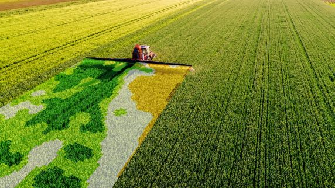
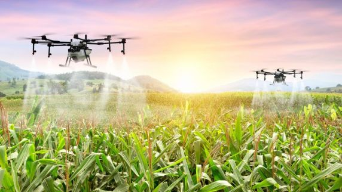
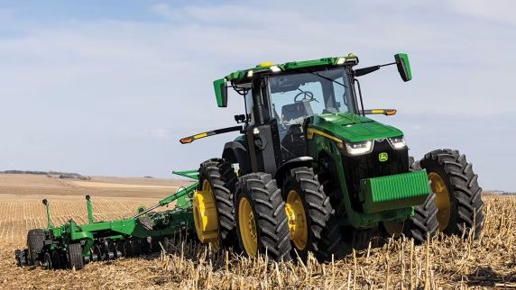
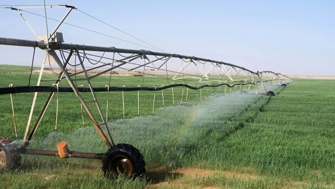

Innovations in Agricultural Technology




Drones use multispectral sensors to scan crops and can detect early signs of stress, such as nutrient deficiencies or pest infestations, before they are visible to the human eye, allowing farmers to respond faster.
In Australia, some farms use GPS-guided autonomous tractors and satellite monitoring systems to manage extremely large agricultural properties efficiently with minimal manual driving.